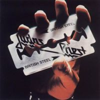
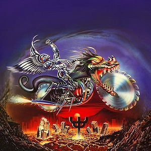

NWOBHM
 De: La Frikipedia, la enciclopedia extremadamente seria.
De: La Frikipedia, la enciclopedia extremadamente seria.
| De la serie Fucking Metal:
|
| NWOBHM
|
|

|
| Breiquin de lou!!, breiquin de lou!!...tan...Breiquin de lou!!, breaquin de lou!!..tan tan..
|
|
| ¿Dónde se comenzó a reventar oidos?
|
los 70s y mediados de los 80s
|
| Instrumentos
|
Casi cualquiera que te imagines. Si, si, un hombre chocando las pelotas tambien...¿qué dices?¿guitarras?¡Pero qué coño!¿Que tipo de degenerado crees que tocaría ese instrumeto sadomasoquista?
|
| Subgéneros revienta oidos
|
En sí ninguno, pero parieron a todos los que existen ahora. Y tambien a tu madre
|
| Fusiones
|
con son Goku, Vegeta, sexo, drogas, alcohol, fuego, mujeres, caca de perro y demas cosas guays de la muerte
|
| Los mas tesos
|
{{{Los_mas_tesos}}}
|
NWOBHM es el nombre larguiiiiiiiiiiisimo nombre que recibe un conjunto de grupos británicos que inventaron el jebi como lo conocemos ahora alla por 1977 o asi.
Es una coincidencia que todas esas bandas fuesen inglesas, por lo que a los gilipollas sabios jovenes de la época, en un grandísimo chute de ganas de tocar los cojones con nombres largos inspiración decidieron llamarlo NWOBHM para abreviar, despues de que tres jóvenes muriesen de ahogo en el intento de decirlo todo seguido.
Origen, influencias y demás cosas que se ponen al principio
La cosa del nombre largo NWOBHM nace en el poderoso imperio del té, tambien conocido como esa isla de allí arriba o Reino unido a finales de los 70's cuando a unos gilipollas les dió por comercializar el punk montones de novatos en el mundo de la música, inspirados por el jar-rock de Deep Purple, Led Zeppelin, Uriah Heep, Pinfloiz, Black Sabbath deciden que le van a dar otra vuelta de tuerca a esa musica ratonera aun un poco primitiva.
De cómo cientos de jebipoyas crean el sonido del metal como lo conocemos
El movimiento surge exactamente en una tabernaca cualquiera de un nombre como puede ser Tasca del Manolete(eso si, en inglés, que sería así como Meinolet's tabern) cuando a un tio se le ocurre coger una guitarra y ponerse a tocar gilipolleces melodias rápidas con tonos disonantes será pedante el puto editor..., todo esto conectado a un amplificador a todo volumen y con distorsion a tope.Todos los clientes de dicho bar se quedaron sordos, excepto un gilipollas que le dio por ir a mear justo cuando el de la guitarra empezaba a tocar. Llegados al punto en el que toda la gente gritaba, el meón salió del baño a toda hostia del susto, creyendo que era el fin del mundo o algo, pillándose las pelotas con la cemallera del pantalón, con lo que profirió un grito agudísimo. Y entonces es cuando se dieron cuenta de lo tan de puta madre que sonaba eso y decidieron grabar un disco. Estos dos paletos músicos eran Ozzy Osbourne y Toni Iommy. Tras grabar algún disco, a unos cuantos se les ocurrió grabar siguiendo ese estilo. Nacieron millones de bandas por toda Inglaterra, algunas de ellas que solo grabaron un par de cancioncitas, y desaparecieron del panorama, y unas tantas que se abrieron paso a patadas y matando a los demás.
De ellos cabe destacar a los grupos Iron Maiden, Black Sabbath, que fueron los creadores de el sonido como tal, Motörhead, el canto del loco, Venom, Saxon, Judas priest y Deff lepard.
Los demás grupos no los conoce ni su madre, pero a un gilipollas de la época se le ocurrio que la mejor forma de perder todo el dinero que tenia era grabar una serie de discos llamados metal for mutthas en las que incluia demos de muuuuuuuuchos grupos de la NWOBHM.
A lo largo de los años, el sonido de estas bandas fue mejorado, refinado y perfeccionado, por lo que en los erli eitis(82-86) el metal estaba en pleno auge amos, que iban de puta madre.
Daños causados por la NWOBHM
- Los murciélagos están en peligro de extinción desde que Ozzy se zampó uno y masas de gente quisieron emularlos. Ahora mismo existen miles de recetas para cocinar murciélagos, y Ozzy ha editado un libro con éstas, pues ha visto que su reality show ya no le sirve de nada.
- Ha habido montones de bajas en lugares aleatorios puesto que Eddie Hunter sigue creyendo que la vida es un combate continuo. Afortunadamente, ninguna de estas bajas es lamentable dentro del precioso mundo del metal, pues solo han sido Margaret Thatcher y millones de canis, y ademas han alimentado las portadas de los discos de los maiden.
- Ningun ser no-jebi puede atravesar el radio de actividad de algunos lugares como Wacken Open Air o Download sin perder algún miembro de manera espontánea y misteriosa. Algunos lo atribuyen a Eddie tambien.
- Narnia no ha vuelto a ser el mismo lugar que era desde que algunos jebis se colaron al tocar las verrugas de Lemmy.
- La ciudad de nueva York no existe desde 1990, año en el que painkiller fué liberado para sembrar el caos. Lo que ven ustedes en las películas es una reproduccion digital. Esto tiene su parte buena, pues así han acabado con una gran cantidad de pijos. Y una cara mala, pues el siguiente objetivo de Painkiller es Cádiz(¿eso es malo?).
 el todopoderoso señor painkiller nos ha prometido que no nos destruira si ponemos una imagen suya en esta página
- Todos los jebis visten con
pintas de gay tachuelas y cuero como los mas machotes del planeta, introducidos por Rob Halford. Esto a la larga produce daños horribles, puesto que cualquier lugar que un jebi roce con alguna parte de su cuerpo acaba por resentirse, y la superficie mas lisa se vuelve gotelé. Aún así, esto ha permitido entrar en el mundo laboral a muchos jóvenes jebis como máquinas de labranza.También, si una persona roza a una de estas personillas, es probable que pierda el brazo. Los hay que los coleccionan.
- Muchas mujeres desaparecieron misteriosamente tras una noche de sexo con Lemmy Kilmister. Unos dicen que las mató, otros que se las comió Snaggletooth, y los mas sabios aseguran que se perdieron en su bigote, que según se asegura, no tiene fondo(quizá acabasen en Narnia...).
- Un cráter de radio de 30 Km en la ciudad legendaria de Donnington en el cual no crece nada, causado por la furia de la NWMOBHM al completo al ver desaparecer el festival monsters of rock de dicha ciudad. Los griegos oyeron esto, lo exageraron y crearon la leyenda de la Atlántida.Probablemente esto ocurra de nuevo cuando alguno de los formantes de esta oleada se den cuenta de que el Download festival se esta plagando con grupos emo.Y su siguiente objetivo será Cádiz también.
- Muchos hombres de nacionalidades diversas no han podido volver a sentarse en su vida por acercarse mucho a Rob Halford.
- Más de 300.000 Amplificadores rotos, guitarras, bajos y demás cosas reventadas, 165.000 personas sordas y mas de nueve millones de embarazos no deseados por tener sexo con Bruce Dickinson.
- La erupción del volcán de Islandia tiene que ver con la última vez que Eddie se dejó ver por ahí
Cosas guays surgidas de la NWOBHM
- Todas las ramas del Heavy metal se podria decir que descienden de lo creado por la NWOBHM.
- Destruir la ciudad de Nueva York. Lo de las torres gemelas Tambien es cosa del Monstruo del metal.
- Hacer millonarios a los dueños de EMI y demás discográficas a base del dinero recaudado de discos como The Number Of The Beast o Painkiller (espera...¿eso es bueno?¡yo sigo sin un duro!).
- Convertir en caca de la vaca a sus predecesores en todo (menos Jimi Hendrix).
- Convertir en caca de la vaca a sus sucesores(a los no-jebis, se entiende).
- Inventar la música.
- Gran cantidad de los iconos del metal, como Eddie, Painkiller o Snaggletooth.
- Gran cantidad de muertes.
- Inventar los dobles bombos.
- Inventar los triples bombos.
- Inventar los cuadruples bombos.
- Tocar con tantos bombos que no pueda ni entrar el público a la arena, ni siquiera los músicos al escenario.
- No inventar el Reggaeton.
- Destruir el Reggaeton.
- Destruirte a tí.
- Encauzar a todos los chavales que escuchan rockandrol y buscan algo mas duro.
- Encauzar a los pobres gilipollas que no quieren escuchar metal porque creen que es ruido y ruido(si, cuando empiezas a escuchar metal, Slipknot no es metal, siempre es con la NWOBHM).
- Uno de los mayores movimientos de masas en el mundo, con festivales como los anteriormente citados.
- El concierto más grande del mundo.
- Abrirle los ojos al mundo y causarle un orgasmo a dios.
- La siguiente creencia: si Mozart o Beethoven estuvieran vivos ahora escucharían y compondrían metal.
- Darle sentido al mundo.
- Crear las mejores guitarras en la historia.
- Liberar a la música de la misma mierda repetitiva.
- ¡¡LOS CUERNOS, JODER, LOS CUERNOS!!.
Grupos que definitivamente NO pertenecen a la NWOBHM
- Dio: Formó parte de Sabbath, pero cuando empezó su proyecto en solitario, el metal ya estaba del todo desarrollado. Intento matar a Bruce Dickinson
utilizando para ello a Za Warudo para ser de los maiden y asi poder decir que formo parte de la NWOBHM, pero no funcionó.
- Uriah Heep: Ya eran viejos hasta para esa época.Les gritaban a los grupos que les teloneaban, que ya formaban parte de la NWOBHM cosas como "esa música, jovenzuelo" y demas gilipolleces. En el año 2009, se invocó a su teclista, que llevaba muerto tres años para formar parte de los nuevos Uriah Heep, para lo cual debian sacrificar a alguien. Intentaron matar a Bruce Dickinson, pero como no pudieron, sacrificaron a un cani, y como es el alma menos valiosa, volvio tal y como era un dia antes de morir. Hasta Eddie parece joven a su lado
- Metal Church: No es mas que un vil intento de creerse los creadores de algo, y no una banda que copie estilos.
Intentaron matar a Bruce Dickinson, porquejoder que cansinos con Bruce
- Kiss: Gene Simmons, viendo que el Hard rock norteamericano no era tan bueno como el metal, intentó colarse en la NWOBHM, consiguiendo la nacionalidad inglesa
e intentando matar a bruce dickinson como todos los envidiosos de el gran movimiento que era la NWOBHM. Claro que nadie se lo creyó, y además, nadie queria ver a un tio que iba maquillado para parecer mas guay y que en vez de comer murciélagos o cadáveres(incluido el teclista de Uriah Heep, que ahora descansa en el estómago de Lemmy) solamente era capaz de chuparse la nariz con la lengua.Entonces Gene les dijo que haria lo que quisieran, incluso chupársela. Rob aceptó encantado, pero Dio tenía un serio problema con Gene y que le copiase todo lo que el hacía(como Dio salva a Santa Claus), por lo que dijo que no habia trato(un momento...si Dio no es de la NWOBHM), secundado por todos los que SI formaban parte de la NWOBHM y Rob, enfadado decidió que a partir de entonces le daban por culo a Judas, empezando una carrera en solitario(por lo menos le habia dado tiempo de grabar painkiller).E intentó matar a Bruce Dickinson
- Bruce Dickinson: Cansado de que todos intentasen matarle, decidió irse de Iron Maiden y empezar una carrera en solitario, para que intentasen matar a Blaze Bailey, su sustituto. Desgraciadamente eso no ocurrió, pero Bruce vivió unos años de lo mas tranquilos.
- Ozzy Osbourne: Se fue de Sabbath porque es gilipollas e hizo un reality show porque ya no valia nada. Encima se cargo a Randy Rhoads cuando a quien pretendia matar era a Bruce Dickinson
como todos, porque Ozzy solo sabe hacer cosas que vendan, por malas que sean.
- El Canto del Loco: Eran demasiado duros como para incluirlos en la NWOBHM. Según muchos expertos, estan dentro del Inner Circle noruego
- Gigatron: No entran dentro de la NWOBHM porque los formantes de esta ola tenian envidia de su gran estilo y de que ellos inventasen el metal.
- Café Quijano: Por las mismas razones que el canto del loco.
- Los Suaves: Un secreta orensano borracho llamado Yosi descubrió un día que un bigotón inglés se habia hecho famoso tocando rocanrol y decidió que el podía hacer lo mismito. Así, se dejó un bigote aún más profundo y en vez de un Perrocosarara decidió que en sus portadas saldría un gato. Visto que aún estaba tras la sombra de
We are Motörhead And we play rock and roll decidió asesinarle y hacerse pasar por él ¡claaaaaaro! ¡por algo se dejó el bigote!, pero el día que iba a matarle en el momento en el que debía hacerlo (6 y media de la mañana) estaba borracho ya, así que Lemmy siguió vivo, y Yosi decidió volver a Ourense. Nada más llegar grabó maldita sea mi suerte (no era por que cerrasen el bar, después de todoporque con lo que bebe Yosi en un solo dia les da para mantenerlo el mes entero)
- Burzum: Los integrantes de la NWOBHM dejaron muy claro desde el principio que los grupos de pop no eran bienvenidos.
La gran cagacaída de la NWOBHM
durante milnovicetochentisís, cuando Donnington ya no existía, Gene Simmons Había encontrado ya la fórmula para acabar con la NWOBHM y que los tontos volviesen a pagar por sus discos.Hizo un pacto con el diablo, y apadrinó a un pequeño drogadicto hiperactivo virtuoso guitarrista llamado Eddie Van Halen para que los niños flipasen de lo rápido que tocaba y asi poder eclipsar a la NWOBHM. Al principio no furrulaba, pero pronto, VAn Halen fue ganando fama, y la NWOBHM se quedo un poco de lado. Además, los discos de esos años, tales como Orgasmatron, no llegaban tan bien como antes al publico. Así, Gene se lamía del gusto(hasta la nariz), pero pronto su plan se truncó cuando el movimiento que empezó junto con otros Van Halen, el Hair metal, basado en el anterior glam rock empezó a robarles público a ellos tambien. Así, la musica homosexual y comercial(Van Halen en este caso no) hecha con sintetizadores tiró de la ola a los retrasados de Kiss y a la NWOBHM, porque vendia mas, y lo escuchaban tambien los pijos. Y así, a los verdaderos fans de la NWOBHM se les ocurrió hacer un metal aun mas rápido, aun más duro y aun mas agresivo.EN esos momentos, los impotentes y pajilleros verdaderos jebis escuchaban thrash y quienes se follaban a 20 tías cada noche casposos, Hair Metal. Así que a la NWOBHM la dieron mucho por culo, y los grupos mas grandes cayeron a principios de los 90 despues de sacar algun discazo, que no se pudo volver a repetir, por lo que a partir de ese punto, no dejaria de bajar su popularidad (y su pasta). Un ejemplo de esto son Painkiller o Fear Of The Dark.
Grandes canciones de la NWOBHM
- The Number of the Beast: Trata sobre un sueño que tuvo el bajista de los maiden en el cual aparecia satanas, lo cual aprovechó la iglesia para tacharlos de satanicos y censurarlos, con consiguiente asesinato de altos cargos de esta como el papa, el obispo de donnington
y tu verdadero padre. Al dia siguiente, cuando sacaron el disco, gracias a la canción esta, se vendio de la hostia, a Pol del culo(primer cantante de los maiden) le dieron por ahi, por el culo y Satanás se les aparecio para darles más dinero y fama.
- Painkiller: Algunos dicen que habla de cada vez que Rob tiene la regla, otros que fué su último novio. De cualquier forma, la letra te la deberia sudar mucho, porque jamas vas a canta como el. Dedícate a escuchar el solo de bateria del principio y a mover la cabeza como un poseso.
- Breaking the Law:
¡uuh!, si que gamberrete esta echo mi pequeño mariquita En el videoclip no tienen otra cosa mejor que hacer que ir a robar a punta de guitarra un banco para llevarse un cassete¿quien coños guarda un cassete en un banco?.
- The Trooper: Habla sobre nosequé guerra
que seguro que Eddie vivió, con lo viejuno que parece.... El estribillo parece muy simple y sin sentido, pero representa el grito que cualquier no-jebi profiere cuando se cruza con Eddie por la calle. Pobre...todos muertos empalados...Siento cierta pena por Cádiz
-
No me toques el Chimichurri que me conozco
- Screaming for Vengeance: Rob Halford advierte de lo que ocurrirá si se te oucrre romper un vinilo de Judas o reirte de los homosexuales
- Ace of Spades: La carta que siempre le falta a Lemmy para hacer un repóker. Pero como todos le temen, le dejan buscarla en la baraja antes de que tenga tiempo de alcanzar el mástil de su bajo.
- Black Metal: Si, Venom eran de la NWOBHM. Ahroa sabéis quienes aparecen en vuestras pesadillas
cantando esa mierda de ruido
- Pour Some Sugar on Me: Los pobres Deff Leppard sufrieron un trastorno grave, y pasaron muchos años creyéndose que eran yogures griegos
de Danone. La prueba obvia es esta canción. Tiene mérito el bateras, tocando solo con un brazo pos yo a un puto lisiao como ese lo abria sacrificao pa ahorrale dolor
Autor(es):
- Comentaristainformal
- Lord Black wizard
- Maideniac
- Bender13
- Sdrf92
- Fagyeah
- Harry El del Pote
- Davemustaine500
- Jwonx-0
- SoleS
Frikipedia 2005-2016, Licencia
GFDL 1.2 - Extraído por FrikiLeaks